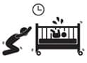

Uyusun da büyüsün…
Eğer bir gün bir yerlerde mışıl mışıl uyuyan, uyurken gülümseyen ve mis gibi kokan bir bebek gördüysen o muhtemelen arkadaşının bebeğidir…
 Neler Bekliyor?
Neler Bekliyor?
Dünyaya geldiğinde neye uğradığını bilemeyen bebek, ilk birkaç hafta çareyi uyumakta bulur. Fakat aklı başına çabuk gelir. Ve o gün bebek kendi kendine, “Güzel yermiş burası hacı, herkes bana bakıyor, uyumadığım zamanlarda acayip ilgi alaka görüyorum” der ve gözü açılır. Geceleri en az 10 kere uyandırır. Bazen beslemek için, bazen pışpışlamak için, bazen yükselen kaka kokusundan kurtulmak için, bazen nefesini dinlemek için, bazen sadece yüzüne bakmak için uyanırsın… İlk başlarda koymaz, kalkarsın. Sonra kocana bakarsın her kalktığında. Neden ben kalkıyorum, o da babası, o da kalksın dersin. Odandan çıkarken kapıyı sert kapatırsın, tıkırtı yaparsın, yorganı çekersin falan işte, o da uyansın istersin. Sonra sonra kulakların duymamaya başlar. Her mızıkladığında kalkmayayım canım, ağlarsa kalkarım dersin. Biraz daha zaman geçer, yatak odasından çocuk odasına giden yolda uykulu gözlerle yalpalarken dişlerini sıkarsın, bebeğin yüzünü görünce geçer. İçinde bebek olan her evde benzer filmler yaşanır. Mekân, zaman, sıklık değişebilir. Oyuncular değişmez: Uyumayan Bebek-Uyuyamayan Anne-Horul Horul Uyuyan Baba.
Sonra senin el gider Bebekleri Mışıl Mışıl Uyutma Metotları, Bırakın Melekler Gibi Uyusun vb. başlıklı kitaplardan alır gelir. Okursun, okursun, okursun ama seninki yemez. Sonra parmakların tıkır tıkır yazar Google’a: “bebek uyku” diye. Okursun, okursun, ilgili ürünlere bakarsın. Seninki gene yemez. Çünkü her çocuk uyku meselesinde kendi kurallarını yazarak geliyor dünyaya.
 Ben ne yaptım?
Ben ne yaptım?
Bebeği kundaklayın, kollarını sıkıca sarın, bacaklar geniş kalsın dediler. Yaptım. Sanki azıcık işe yaradı.
Bebeği uykusu gelince yatağına yatırın siz odadan çıkın, o kendi kendine bakınırken uyur, dediler. Duyduğumda da inandırıcı gelmemişti, ama denedim. Hakikaten inandırıcı değilmiş. Olmadı.
Kucakta sallayabilirsiniz ama dizlerinizde sallamayın, dediler. Hâlâ aradaki farkı çözebilmiş değilim. Çocuk neticede sallanıyor. Ve gün geçtikçe ağırlaşıyor. Kollarımı perişan etmenin ne anlamı var? Dizlerimde salladım. Tuna’yı uzunca bir süre salladık. Mete istemedi. Name hâlâ sallanıyor. Neticede eğer çocuk kabul ediyorsa, sallanan çocuk uyuyor.
Karnı aç olan bebek az uyur, dediler. Doyurup gazını çıkartıp öyle uyuttum. Randıman aldım. Anne sütü aldıkları dönemde gece uykudan önce mama veriyordum ki mamanın ağırlığıyla birkaç saat deliksiz uyusunlar.
Banyo yapan bebek kendini anne karnında hisseder, hem de daha iyi uyur, dediler. Hâlâ nasıl olduğunu bilmiyorum ama çocuklar banyo yaptıkları geceler daha sık uyanıyorlar. Fakat tabii her çocuk farklı tepki gösterebilir.
Babaannem akşamları telefonda konuştuğumuzda, “Hepimizin uykuları onların olsun” diye güzel dileklerde bulundu. Canı gönülden “Aaamiiin” dedim.
Odalarında müzik dinletin, dediler. Peki dedik gittik bir cd çalar aldık, bir tomar da ninni cd’si. İşe yaradı mı? Yarar gibi oldu. Ama mesele şu, cd bütün gece çalacak ki çocuk uyandığında müziği duysun, heee tamam asayiş berkemal, desin ve uykuya devam etsin. Eğer bebeğin yanında yatıyorsan, senin de bu sesten rahatsızlık duymuyor olman lazım ve bu benim için mümkün değildi.
Eğer durum daha vahimse doktora bir sor, ilaç milaç bir şeyler vardır belki, dediler. Sorduk. Var tabii birtakım bitkisel ilaçlar, istersen deneyelim dedi. Denedik. Aptallaşıyorlar, uykuya çabuk geçiyorlar. Ama etkisi dört saat sürüyor. Ki çocuğun saat 21:00 sularında uyuduğu düşünülürse ilacın etkisi 01:00 gibi geçiyor. Bu da zaten senin yatma saatlerine tekabül ediyor. Eee ne anladım ben bu işten. Ya çocuğu uyutup hemen sen de yatacaksın ki deliksiz 4 saat uyuyabil, ya da ilacı çocuğu kendi yatma saatine yakın, o uyurken vereceksin. Bu da komplo teorisi gibi bir şey. Bu kadar entrikaya anne kalbi dayanmıyor.Gene de çok zor durumda kalırsan denersin.
Ezcümle… Şu anda bu evde üç çocuk büyüyor, tüm koşullar hepsine aynı şekilde sağlanmış olmasına rağmen hepsi bir değişik uyuyor. Onun da ötesinde, bir ay çok güzel uyuyan çocuk, ertesi ay saat başı uyanan bir çocuğa dönüşebiliyor. Üç yaşına doğru uykuları düzene girmeye başlıyor. Yani girer gibi oluyor. Yani aslında girdiği tam söylenemez. Sadece sen alışıyorsun.
İlk zamanlar bebek her uykusu geldiğinde uyur. Ama bence bir zaman sonra ipleri eline al. Kendi yaşam tarzına uygun bir uyku düzeni kur ve çocuğu bu düzene alıştır. Örneğin, akşam 17:00 gibi yarım saat uyuyan bir çocuk gece 22:00’den önce uyumaz. Niye uyusun ki? Kreşlerde düzen şu: 11:30-12:00 öğle yemeği ve 12:30 uyku saati. 2-2,5 saat uyuyorlar, sonra akşama kadar uyku yok. Saat 20:00 olduğunda kendiliğinden dökülmeye başlıyorlar ve erkenden uyuyorlar. Kalan zaman senindir. Hafta sonları da aynı düzeni koruyorum. Bir süre sonra alışıyorlar ve düzenleri bu oluyor.
Bir de sorunsuz çocuklar var. Name gibi. Doğduğundan beri saat 20:00 sularında uyuyor ve sabah 06:30’a kadar deliksiz uyuyor. Yok gibi!
Burada hemen başka bir şey anlatmam lazım. Şimdi bebekleri başlangıçta her 3-4 saatte bir besliyoruz ya. Diyelim ki, beslenme saati geldi, ama hâlâ uyuyor, uyanmadı. Ben ilk başlarda saati kuruyordum, kalkıp bebeği de uyandırıp, karnını doyurup tekrar uyutuyordum. Sonra doktorumuz dedi ki, bebeğin gelişimi için uyku da beslenme kadar önemli, uyuyorsa uyandırma, sabah kalkınca doyuruverirsin. Saati kurmayayım mı yani dedim, boş ver yat uyu dedi, iyi madem dedim. Tatlıya bağladık.
İşte böyle, kitapları oku, doktorla konuş, cd’ler al, kundaklar al, aklına ne geliyorsa yap. Ama önce dua et, bebeğinin uykusu Name’nin uykusu gibi olsun.
Uyku İçin Alet Edevat
Bebek yatağı:
Bebek beşiğinin içine mutlaka bir tane bebek yatağı alacaksın. Bu yatakların organikleri var, kokuluları var, bambuları, antibakteriyel olanları var vs. Fakat benim sana önerim ilk üç ay kullanmak için bir de yan yatış yatağı alman. Zira her annenin en büyük korkusu boğulmadan kaynaklı ani bebek ölümleri. Bu yan yatış yatakları bebeğin sırtına destek verdiği ve karın bölgesinde de yükseklik sağlayarak düşmeyi engellediği için geceleri senin daha iyi uyumanı sağlayabilir. (Zırt pırt kalkıp bebek yerinde duruyor mu diye bakmazsın. Bunu sadece ben yapmış olamam, birileri “Evet, ben de gece kalkıp bebeğim nefes alıyor mu diye kontrol ediyordum” desin.)
Bu yan yatış yataklarının şöyle de bir avantajı var, bebeği uyurken, tepsi gibi istediğin yere taşıyabiliyorsun. Salonda bebeği nereye koyacağım, mutfakta nereye koyacağım derdi yok, yatağına yatır ve istediğin yere koy. Hadi diyelim ki, evin genelini bebek için organize ettin. Bu işin gezmesi var. Babaanneye, anneanneye gidince nereye yatıracaksın bebeği? Yeni annesin şekerim, yastık temiz mi, yatak temiz mi, yataktan düşer mi, bunların hepsi jet hızıyla geçecek kafandan. İşte o yüzden al bu yataktan, koy poşete, gittiğin yere götür. (Ne ısrar ettim ha!)
Su geçirmez alez:
İlk aylarda çok ihtiyacınız olmayacak ama bebek milleti çok çabuk büyüyor. Altı hep bezli olduğundan çişleri çıksa çıksa pijamalarına ya da yatak çarşafına çıkıyor, ama büyüdüklerinde işler değişecek. İşeyince bir kova çiş bırakıyorlar yatağa ya da öksürürken kusuyorlar falan. En azından yatağı kurtarırsın.
Bebek yastığı:
Bebek yastığının birkaç cm dolgunluğunda olmasına dikkat et. Çünkü yastığı, bebeğin omuz hizasından başına kadar olan kısmı çok hafif yukarıda tutmak için kullanacaksın. Bu eğimin ne kadar olması gerektiğini merak ediyorsan, doğum yaptığın hastanede, bebeği yanına getirdikleri yatağın eğimini hatırla. İşte yatırırken bebeğe o kadar eğim vermen gerekiyor.
Birkaç tane battaniye:
İlk bir yıl için yorgan kullanmayı önermiyorlar. Gerçekten de en hafif yorgan bile bebeklere ağır geliyor. Onun yerine farklı kalınlıklarda battaniyeler almanı öneririm. Gece yatarken üzerini örtmek için kalın bir battaniye, gündüzleri kullanmak için daha hafif bir battaniye, bir de seyahat tipi ince battaniye. Biz bu ince battaniyeyi rulo haline getirip iyice küçülterek çantamızda taşımayı alışkanlık haline getirdik. Malum çocukların nerede uyuyacakları belli olmuyor.